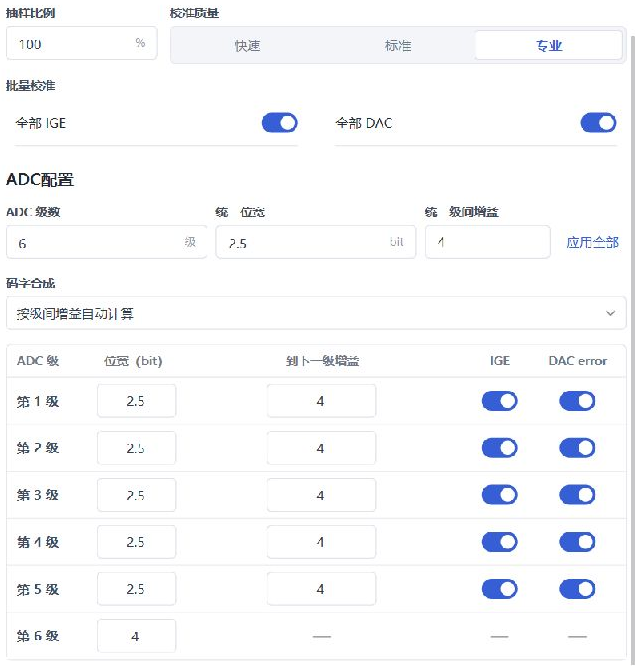
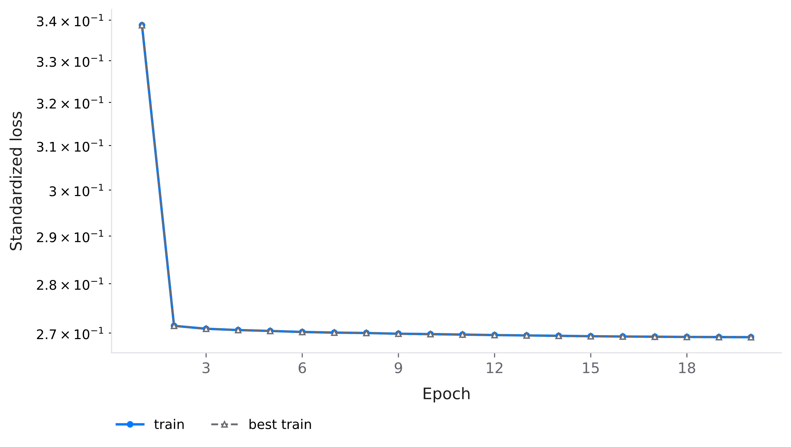
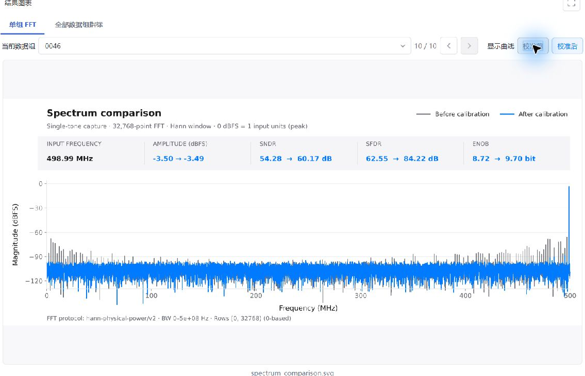
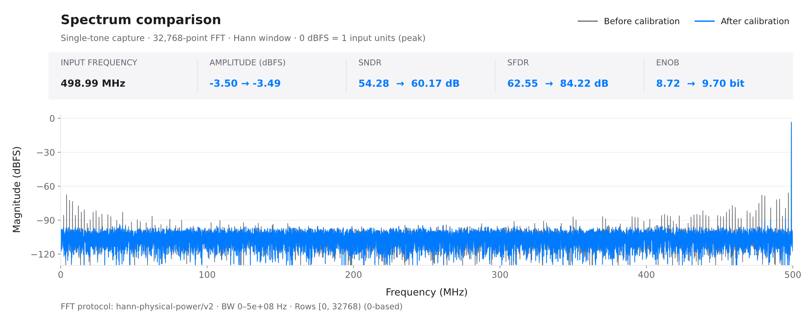
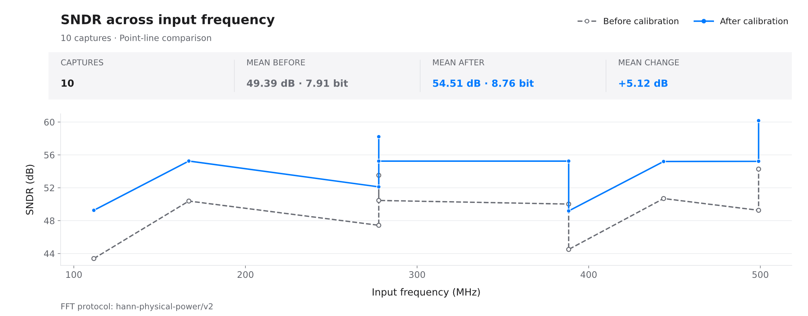
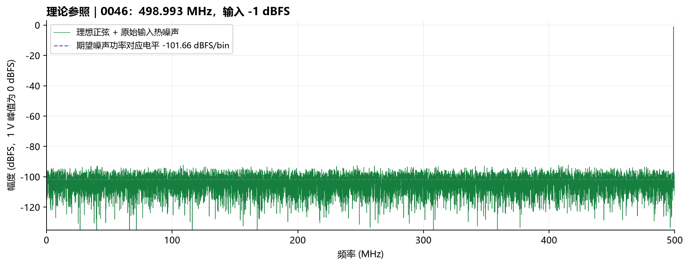

Quick start: 50-capture full-band ADC calibration
Installation · User guide · 中文 · Configuration reference · 中文 · 中文
Reproduce the completed 流水线ADC_全频段50组 experiment: 50 captures → 40/10 split → 18→5→1 KAN training → 10 held-out tests. Settings, screenshots and results come from the saved October 20, 2026 experiment in Windows application 3.5.0. Chinese interface labels identify the controls below.
1. Prepare the application and data
Follow the installation guide, then run KAN Workbench.exe. Select Code → Download ZIP in this repository and extract examples/fullband50/raw/. These 50 CSV files accompany this guide; MATLAB is not required.
| Property | Specification |
|---|---|
| Captures | 10 frequencies × 5 amplitudes = 50 |
| Acquisition | Single channel, single tone, 1 GS/s, 32768 samples per capture |
| CSV structure | Six signed-integer columns; no header, timestamp or index column |
| Columns 1–5 | Five 2.5-bit pipeline stages; codes -4 to 4 |
| Column 6 | 4-bit backend; codes -8 to 7 |
| Nominal interstage gains | 4 for all five transitions |
| Input amplitudes | -1, -3, -6, -9 and -12 dBFS; 0 dBFS = 1 V peak |
| Input thermal noise | 5 LSB RMS, approximately 610.35 μV; LSB defined for 14 bits over ±1 V |
Frequencies are approximately 1.007, 56.366, 111.664, 167.023, 222.321, 277.679, 332.977, 388.336, 443.634 and 498.993 MHz, spanning the interior of the 0–500 MHz first Nyquist zone. Each frequency has all five amplitudes. Exact coherent frequencies and hashes are in the manifest.
PS_f498.993M_A-01.0dBFS_0046.csv identifies capture 0046 at approximately 498.993 MHz and -1 dBFS. Its first three rows are:
-4,2,-1,1,1,-3
4,-2,1,-1,0,1
-4,2,-1,1,-1,3
The simulation follows generate_pipelined_single_tone.m: fixed gain, DAC and comparator errors, cubic nonlinearity, memory, and random thermal noise added before quantization. Hardware errors remain fixed across captures. Jitter, temperature drift and device variation are not simulated. CSV files contain ADC codes without ideal-output labels.
2. Create a project and preprocess
Select 新建 / New, then 编辑 / Edit to name the project 流水线ADC_全频段50组. Open 数据 / Data and point 原始数据目录 / Raw data directory to the supplied raw folder. A persistent copy such as C:\ADC-Demo-Fullband-50\data is also suitable.
| Interface field | Setting | Purpose |
|---|---|---|
| 输出格式 / Output format | CSV | Store numeric outputs |
| 测试集比例 / Test fraction | 20% | Reserve 10 complete captures; train on 40 |
| 输入编码 / Encoding | 有符号十进制 / Signed decimal | Interpret negative codes correctly |
| 通道数 / Channels; 输入信号 / Signal | 1; 单音 / Single tone | Match acquisition |
| 原始数据来源 / Source; 模型输入模式 / Model input | 各级码字 / Stage codes, both | Preserve six stage observations |
| 补偿基准来源 / Baseline source | 初始参数合成 / Nominal reconstruction | Define the compensation baseline |
| 抽样比例 / Sample fraction; 校准质量 / Quality | 100%; 专业 / Professional | Match the recorded coarse calibration |
| 全部 IGE / All IGE; 全部 DAC / All DAC | Enabled, both | Estimate gain/DAC errors to improve the reference |
Set ADC 级数 / Stage count = 6; stage widths 2.5, 2.5, 2.5, 2.5, 2.5, 4; and all five 到下一级增益 / Gains to the next stage = 4. Select 按级间增益自动计算 / Compute from interstage gains. Enter 4 in 统一级间增益, select 应用全部, and verify every row. The backend has no next-stage gain. Use nominal topology values, not the simulator's true mismatch parameters.

Select 1. 检查数据 / Check data → 2. 开始预处理 / Start preprocessing. Verify 50 files, six columns, 40 training captures and 10 test captures. To revise checked settings, select 重新开始 / Restart first.
project/outputs/preprocessing/v001/
├─ train_40/
│ ├─ inputs/ Normalized six-column inputs
│ ├─ baseline/ Nominal reconstructed baseline
│ └─ reference/ Sine reference fitted to coarse reconstruction
├─ test_10/ Preprocessed held-out captures
└─ raw_test/ Entry point for held-out raw-capture testing
Training targets are reference - baseline; calibrated outputs are baseline + predicted compensation. Although coarse calibration is enabled, the baseline remains nominal. Coarse calibration improves reference construction; the final result is not a KAN correction added to an already coarse-calibrated baseline.
raw_test may contain only raw_sources.json, referencing the original CSV files. Preserve the raw directory. A new random split can change capture allocation; training seed 1 does not fix preprocessing allocation. In this record, coarse fitting used 39 training-side captures and acceptance used one; none belonged to the final ten test captures.
3. Configure and train the KAN
Open 配置 / Configuration → 浮点模型 / Floating-point model → 模型训练 / Model training. Verify that 训练数据 / Training data points to this run's train_40.
| Tab / field | Setting | Reason |
|---|---|---|
| 数据读取 / Data reading: input mode | 各级码字 / Stage codes | Six observations per sample |
| Sample rate; signal | 1 GHz; single tone | Match acquisition and spectral analysis |
| 每组读取行数 / Rows per capture | 32768 | Read each full capture |
| 网络设置 / Network: 窗口数量 / Window | 3 | Include temporal context for memory-related error |
| 隐藏层 / Hidden layers | 5 | One hidden layer; enter only 5 |
| grid; k | 5; 3 | Fit smooth nonlinearity with cubic splines over five grid intervals |
| 基础函数 / Base function | identity | Retain a linear branch |
| Independent KAN per output | Disabled | One output channel |
The preview should display 18→5→1, 1820 parameters. Eighteen inputs correspond to six columns × three samples; the output is one compensation value. This is the completed configuration, not a proven minimum-size network.
Under 训练设置 / Training settings, expand 训练策略 / Training strategy and 运行设置 / Runtime settings:
| Field | Setting |
|---|---|
| Epochs; batch size | 20; 512 |
| Learning rate; weight decay | 0.001; 0.0001 |
| Optimizer; loss | adamw; mse |
| 标准化补偿目标 / Normalize compensation targets | Enabled |
| Scheduler; cosine period; minimum learning rate | cosine; 20; 0.000001 |
| β1; β2; ε | 0.9; 0.999; 0.00000001 |
| AMSGrad; early stopping | Disabled, both |
| Device; precision | Auto; auto — resolved to CUDA and float64 in this run |
| Random seed | 1 |
| 评估记录 / Evaluation recording | Post-training evaluation and per-epoch spectra disabled |
Normalization scales compensation targets for optimization; cosine scheduling reduces late-stage updates, and weight decay lightly constrains parameters. Twenty epochs are the fixed budget; the loss need not approach zero.
Select 开始训练 / Start training. Confirm the resolved device and precision on 训练 / Training, then wait for 训练完成 / Complete, 20/20. Recorded standardized MSE decreased from approximately 0.339 to 0.269. 打开目录 / Open directory locates checkpoints/best.pt and last.pt.

View the original training-loss SVG.

4. Test the ten held-out captures
Select 模型测试 / Model test from the completed training page, or open 测试 / Test and expand the input section.
- 测试模型 / Test model: select this run's
checkpoints/best.pt. The recorded training version isv002; a first run usually usesv001. Match the task rather than a fixed version number. - 原始采集数据目录 / Raw capture directory: select this preprocessing run's
raw_test. Do not selecttrain_40,test_10or the directory containing all 50 captures. - Signal; rows per capture: single tone; 32768. The model supplies the ADC contract and sample rate.
- Select 开始测试 / Start test. Verify 10 completed captures.
In 单组 FFT / Single-capture FFT, select a capture and enable 校准前 / Before and 校准后 / After. Use 全部数据组指标 / All-capture metrics for SNDR and SFDR across the full set.

5. Interpret results and the noise reference
Before/after metrics use 32768 samples, a periodic Hann window, 1 GS/s and a 0–500 MHz band. Check the fundamental's frequency and amplitude, then compare harmonics, spurs and noise. SNDR includes noise and distortion; SFDR measures the largest spur. ENOB is derived from the reported SNDR, not an increase in physical converter bits.

View the original spectrum SVG. Actual result plots come directly from the application; PNG copies are rasterized only for document layout.

All ten held-out results follow. Input amplitude refers to the simulator setting; metrics are in dB.
| Capture | MHz | Input dBFS | SNDR before → after | SFDR before → after |
|---|---|---|---|---|
| 0015 | 111.664 | -12 | 43.39 → 49.26 | 48.62 → 73.58 |
| 0018 | 167.023 | -6 | 50.38 → 55.25 | 56.05 → 80.53 |
| 0027 | 277.679 | -3 | 53.52 → 58.21 | 60.70 → 86.62 |
| 0028 | 277.679 | -6 | 50.46 → 55.24 | 56.18 → 82.48 |
| 0029 | 277.679 | -9 | 47.43 → 52.11 | 55.12 → 78.96 |
| 0038 | 388.336 | -6 | 50.02 → 55.25 | 56.14 → 84.63 |
| 0040 | 388.336 | -12 | 44.50 → 49.18 | 50.29 → 79.17 |
| 0043 | 443.634 | -6 | 50.69 → 55.20 | 56.12 → 77.17 |
| 0046 | 498.993 | -1 | 54.28 → 60.17 | 62.55 → 84.22 |
| 0048 | 498.993 | -6 | 49.26 → 55.22 | 56.04 → 76.15 |
Mean SNDR is 49.39→54.51 dB, with gains of 4.50–5.96 dB per capture; SFDR gains are 20.12–28.89 dB. Different amplitudes at the same frequency produce different SNRs: these points are not a constant-amplitude frequency sweep. See the experiment record and result CSV.

Original application exports: SNDR · SFDR.


Calibration and the noise floor
Calibration suppresses repeatable conversion errors while preserving the input signal and random noise. A fitted sine reference provides a learning target; it does not make random input noise a recoverable deterministic error.
For input thermal noise alone, SNR = 20 log10(A / (√2 σ)), where A is sine peak amplitude and σ = 610.35 μV RMS. Reference SNRs at the five amplitudes are 60.28, 58.28, 55.28, 52.28 and 49.28 dB, respectively. The -1 dBFS capture reaches 60.17 dB after calibration, close to this noise-limited reference. Further training-loss reductions need not improve held-out performance.

For this FFT convention, the expected noise-power-equivalent bin level is approximately -101.66 dBFS/bin; individual bins fluctuate. The theoretical plot uses 0 dBFS = 1 V peak, without smoothing, filtering or noise subtraction. Application exports use normalized reconstructed codes, with magnitude readings approximately 2.50 dB lower. Align references before comparing noise floors; SNDR/SFDR are invariant to a common fixed scale. See the spectrum notes.
Scope of the result
Training/test files are disjoint, but frequency or amplitude conditions can overlap. This evaluates held-out captures from one device model; it does not establish generalization to every unseen frequency, other devices, or complete absence of overfitting. Further model or hyperparameter selection requires separate validation data and an independent final test set.
6. Preserve the experiment
Keep raw captures, the complete project, model with its configuration, and test reports. Raw files referenced by raw_test must remain accessible. See backup and migration · 中文.
Completion criteria: 40/10 split; 20 completed epochs; ten test records; accessible model, metrics and spectra. Use test_summary.json, fft_summary.csv and groups/ for review. Match the model and test entry to their task versions on subsequent runs.